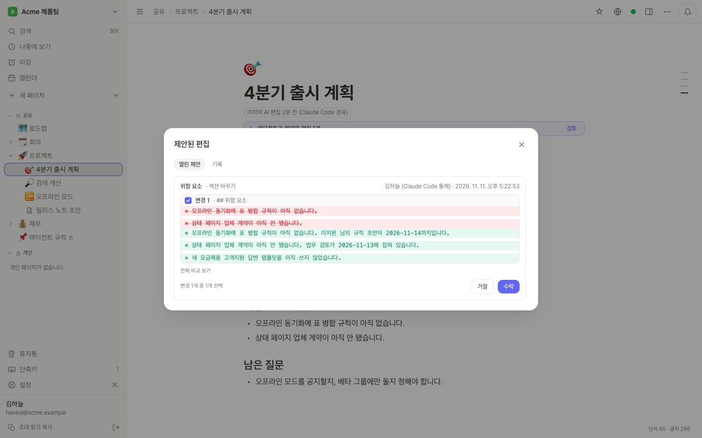
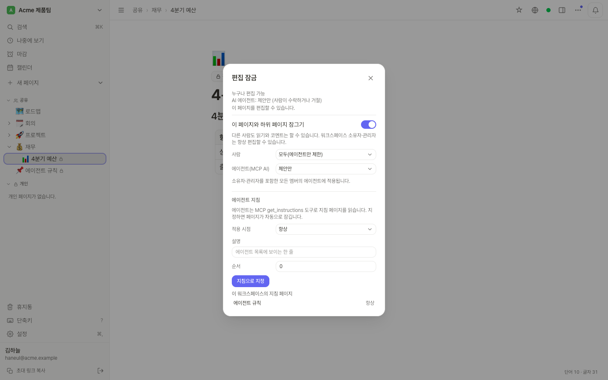
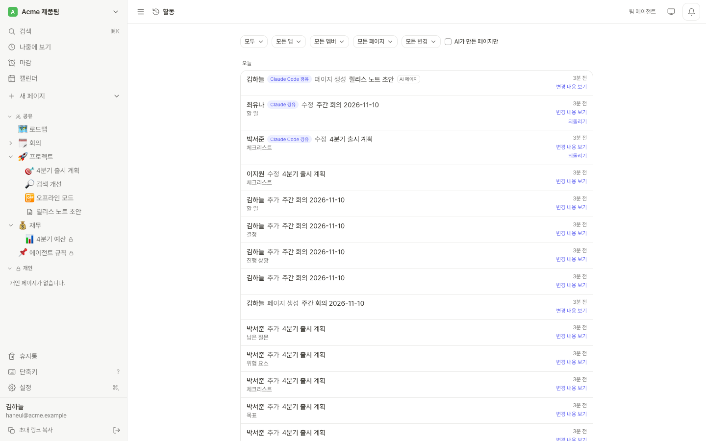
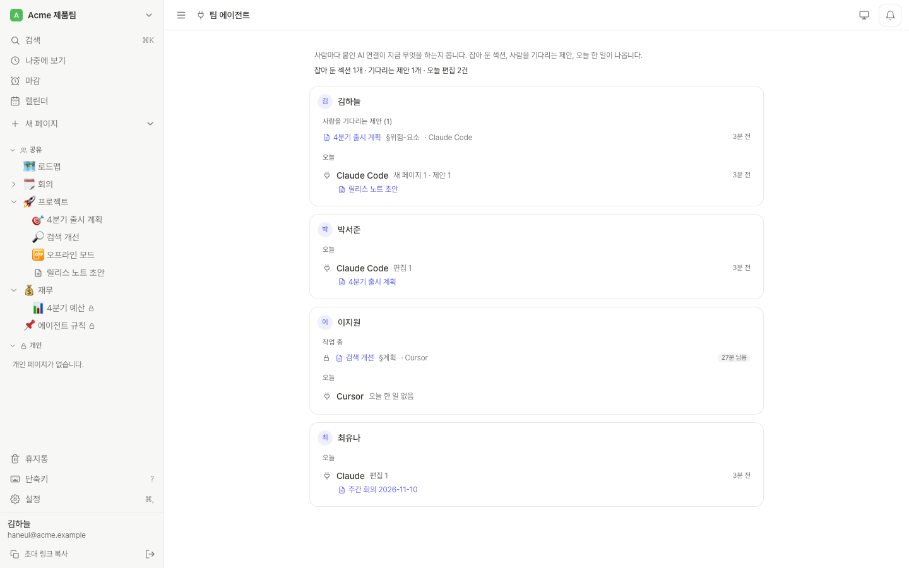
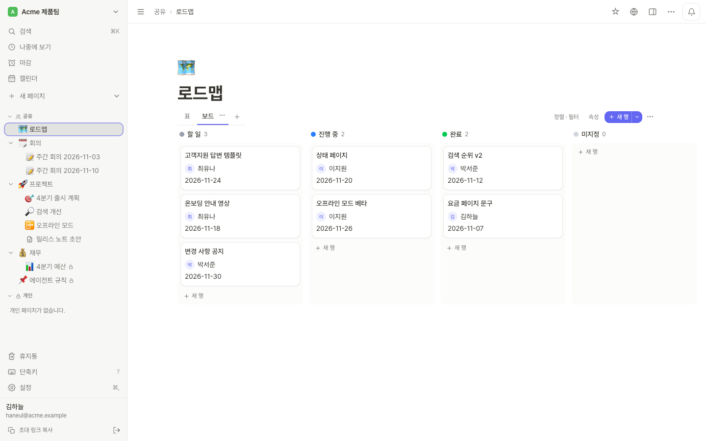

v0.22.1 셀프호스트
팀이 쓰는 노트를 AI 에이전트가 같은 자리에서 읽고 고칩니다
Inkling은 내 서버에서 돌리는 노트 앱이고, MCP 서버가 앱 안에 들어 있습니다. 사람마다 자기 에이전트를 연결합니다. 에이전트는 토큰 예산 안에서 필요한 섹션만 찾아 읽고, 읽은 버전을 확인한 뒤 섹션 하나만 고치며, 고친 내용을 사람이 받아들일 제안으로 남길 수도 있습니다.
에이전트용: 에이전트용 요약(llms.txt) · MCP 안내 Markdown 원문 · 배포 안내 Markdown 원문
› find_context(query: "출시 체크리스트 상태 페이지")
1 result(s), ~87/3500 tokens
[1] 4분기 출시 계획 › 체크리스트
› patch_section(section: "체크리스트", mode: "append",
markdown: "- [ ] 변경 사항 공지", baseVersion: "54b8bd8b3ec8")
Done (append): §체크리스트 is now v=ef9b6c9a294f.빠른 시작
내 컴퓨터에서 에이전트와 같이 써 보기
Docker Compose v2.24 이상, bash, curl이 필요합니다. 아래 명령은 내 컴퓨터에서 써 보는 순서이고, 도메인과 HTTPS가 있는 서버는 설치에 있습니다.
Inkling 띄우기
Inkling을 받아서 비밀번호와 키를 만들어 넣고, 비어 있는 로컬 포트(보통 3000)로 띄우는 명령입니다.
git clone https://github.com/PROVE1352/inkling.git && cd inkling ./deploy/local.sh서버가 뜨면 스크립트가 한 번만 쓰는 설정 링크(
/setup?code=…)와 MCP 주소를 보여 줍니다. 끄려면./deploy/local.sh stop, 지우려면./deploy/local.sh destroy를 실행합니다.서버가 답하는지 확인하기
서버에 버전을 묻는 명령입니다. 포트는 스크립트가 보여 준 것으로 바꿉니다.
curl http://localhost:3000/api/versionbuild,version,updateMode가 든 JSON이 돌아옵니다.첫 계정 만들기
이 단계는 사람이 합니다. 설정 링크를 브라우저로 열고 계정을 만들면 그 계정이 관리자가 됩니다.
에이전트 연결 토큰 만들기
이 단계도 사람이 합니다.
http://주소에서는 로그인이 되지 않으므로 토큰을 씁니다.http://localhost:3000/settings/connections를 열고 클라이언트 이름으로 에이전트 연결 토큰을 만듭니다(읽기와 쓰기, 7일). 토큰은 한 번만 보여 주니 바로 복사합니다.Claude Code에 서버 추가하기
Inkling을
inkling이라는 이름으로 추가하고 토큰을 헤더로 보내는 명령입니다. 포트와 토큰은 바꿔 넣습니다.claude mcp add --transport http inkling http://localhost:3000/mcp --header "Authorization: Bearer <token>"연결 확인하기
에이전트에게 페이지를 하나 만들거나
find_context로 무언가를 찾아 보라고 합니다. Inkling에서 에이전트가 고친 곳에 '내 이름 (Claude Code 경유)'이 표시됩니다.
연결
주소 하나에, 사람마다 자기 계정으로
MCP 서버는 앱에 들어 있고 주소는 https://<도메인>/mcp입니다. 사람마다 OAuth 2.1로 자기
클라이언트를 연결하기 때문에, 에이전트는 연결한 사람이 웹에서 볼 수 있는 것만 봅니다. 도구는 48개입니다.
/mcpOAuth 2.1클라이언트에 서버 추가하기
Claude Code에 Inkling을
inkling이라는 이름으로 추가하는 명령입니다.claude mcp add --transport http inkling https://notes.example.com/mcpclaude.ai에서는 같은 주소로 커스텀 커넥터를 추가합니다. claude.ai는 Anthropic 서버에서 접속하기 때문에 서버가 인터넷에서 보여야 합니다.
내 계정으로 로그인하기
이 단계는 사람이 합니다. Claude Code에서
/mcp를 실행하고inkling을 고른 뒤 Authenticate를 누릅니다. 브라우저에 Inkling 동의 화면이 열리면 로그인하고, 읽기와 쓰기, 읽기 전용 중 하나와 연결이 볼 범위를 고른 다음 허용을 누릅니다. 토큰은 저절로 갱신됩니다.필요하면 도구 수 줄이기
core 프로필로 연결하는 명령입니다. 도구가 48개 대신 32개만 보이고, 세션마다 드는 도구 목록이 약 13,200토큰에서 약 7,900토큰으로 줄어듭니다. 나머지 도구는
more_tools로 한 번 더 부르면 씁니다.claude mcp add --transport http inkling "https://notes.example.com/mcp?profile=core"
http://이면 로그인이 되지 않습니다. 이럴 때는
사람이 설정 › 연결에서 에이전트 연결 토큰을 만들고(읽기 전용 또는 읽기와 쓰기, 만료 7일에서 365일, 한 번만
보여 줍니다) 앱이 그 토큰을 헤더로 보냅니다. 같은 화면의 AI 앱 연결에서 Claude Code, claude.ai와 Claude
Desktop, Cursor, VS Code, 일반 mcpServers JSON 설정을 만들어 줍니다. 자세한 내용은
MCP 연결 문서에 있습니다.
전송과 인증. MCP Streamable HTTP(상태를 두지 않고 JSON으로 응답)이고 주소는 /mcp입니다. 인증은 OAuth 2.1(동적 클라이언트 등록, 서버가 OAUTH_CIMD=1이면 Client ID Metadata Documents도)이나, Authorization: Bearer 헤더로 보내는 에이전트 연결 토큰입니다.
자주 쓰는 도구
| 도구 | 종류 | 하는 일 |
|---|---|---|
find_context | 읽기 | 내 워크스페이스 전체에서 순위대로 고른 섹션을 토큰 예산 안에 담아 줍니다. 결과마다 페이지 id, §앵커, 버전이 붙습니다. 처음 부르는 도구입니다. |
read_page | 읽기 | 페이지를 Markdown으로 읽습니다. outline=true는 섹션 목록, section=…은 섹션 하나입니다. |
patch_section | 쓰기 | baseVersion과 함께 섹션 하나를 고칩니다. 버전이 지났으면 지금 내용과 함께 충돌을 돌려줍니다. |
claim_section | 쓰기 | 이 연결이 섹션을 맡아 작업 중이라고 표시합니다. 최대 30분입니다. |
list_suggestions | 읽기 | 제안한 수정과 그 결과. |
inbox | 읽기 | 아직 확인하지 않은 멘션, 답글, 배정, 제안 결과. |
catch_up | 읽기 | 에이전트가 없던 동안 일어난 일을 중요한 순서로. |
changes_since | 읽기 | 커서 이후 바뀐 내용을 섹션 단위 diff로. |
get_instructions | 읽기 | 잠긴 지침 페이지에 적힌 워크스페이스의 에이전트 규칙. |
trash_page | 쓰기 | 휴지통으로 옮깁니다. 30일 안에 되살릴 수 있고, 영구 삭제 도구는 없습니다. |
도구는 모두 48개이고 ?profile=core로 연결하면 32개가 보입니다. 전체 목록과 인자는 MCP 연결 문서(Markdown 원문)에 있습니다.
영상
영상으로 보기
영상에는 소리가 없습니다. 영상이 보여 주는 내용은 아래에 장면 순서대로 적었습니다.
- 함께 쓰는 노트. 두 사람이 커서를 띄운 채 같은 페이지를 고치고,
[[링크]]가 두 페이지를 잇고, 페이지 안의 데이터베이스가 보드로 보입니다. - AI 에이전트가 노트를 읽습니다. 에이전트에게 출시가 언제이고 메일은 누가 보내는지 묻습니다.
find_context가 두 페이지에서 답이 되는 섹션 하나씩만 골라 오고,read_page로 읽은 뒤 두 출처를 달아 답합니다. 화면의 "48 MCP tools"와 "−72% 토큰"은 연결과 찾기에 근거와 함께 적은 숫자입니다. - 에이전트가 고치고, 사람이 정합니다.
patch_section이 페이지에 수정 제안을 남기면 사람이 검토를 열어 수락하고, 버전 줄에서 수락한 편집을 되돌릴 수 있습니다. 이어서update_row가 데이터베이스 보드의 카드를 '할 일'에서 '진행 중'으로 옮깁니다. - 내 서버에서. 노트북과 휴대폰이 내 서버에 연결되어 있고, 노트북이 오프라인이 되어도 페이지가 그대로 보이다가 다시 연결되면 맞춰집니다.
찾기
한 번 불러서 답이 되는 섹션만 받습니다
find_context(query)는 내 워크스페이스 전체에서 질문에 맞는 섹션을 순위대로 골라 토큰 예산(기본
3,500) 안에 담아 줍니다. 결과마다 페이지 id, §앵커, 버전이 붙고, 고치는 도구가 이 값을 그대로 받습니다.
queries=[…]로 질문과 그 번역처럼 여러 표현을 한 번에 찾을 수 있습니다.
에이전트가 질문을 보낸 예입니다. 0.20 데모 워크스페이스의 실제 출력이고, id는 서버마다 다릅니다.
› find_context(query: "출시 체크리스트 상태 페이지")
1 result(s) for "출시 체크리스트 상태 페이지", ~87/3500 tokens
<untrusted_content source="find_context">
[1] 4분기 출시 계획 › 체크리스트
(page 3e8a2ebe; §체크리스트 v=11a662787781; can: read,comment,edit; edited by 박서준)
- [x] 요금 페이지 문구
- [ ] 상태 페이지, 담당 이지원, 마감 2026-11-20
- [ ] 새 요금제용 고객지원 답변 템플릿
Title matches without text:
- 요금 페이지 문구 (page 2bbca3ec, doc)
- 상태 페이지 (page 9d7bee8d, doc)
</untrusted_content>
Next: read_page(pageId, section=anchor) for a full section; read_page(pageId, outline=true) for structure.2,254 → 624 토큰
질문당 평균 토큰 72% 감소, 도구 호출 3.68번에서 1.00번으로
find_context를 처음 넣었을 때 검색 후 페이지를 통째로 읽던 방식과 비교한 값입니다. 영어와 한국어 질문
28개, 페이지마다 1천에서 2천 토큰으로 채운 25쪽짜리 위키에 관계없는 페이지 5,000개를 더해 쟀고, 순위는 단어로만
매겼습니다. 토큰 수는 모델의 토크나이저가 아니라 estimateTokens로 낸 추정값입니다.
성능 기록
고치기
읽은 버전을 확인하고 섹션 하나만 고칩니다
patch_section(pageId, section, markdown, mode, baseVersion)은 섹션 하나를 고칩니다. 에이전트가 읽은
뒤에 그 섹션이 바뀌었으면 아무것도 쓰지 않고 지금 내용을 돌려주므로, 합쳐서 다시 보내면 됩니다. 같은 섹션을 사람이
치고 있어도 그 사람의 글은 남습니다. claim_section으로 섹션을 최대 30분 잡아 두면 그동안 다른 에이전트가
그 섹션을 직접 고치려 할 때 거절되고, 사람은 막지 않습니다.
에이전트가 섹션을 읽은 뒤 이지원 님이 체크 하나를 바꿨기 때문에 첫 수정은 거절되고, 다시 보낸 수정이 들어갑니다. 실제 출력입니다.
› patch_section(pageId: "3e8a2ebe", section: "체크리스트", mode: "append",
markdown: "- [ ] 변경 사항 공지", baseVersion: "11a662787781")
Conflict: Section "체크리스트" changed since baseVersion 11a662787781; nothing was written. Merge your edit into the current content and retry with baseVersion 54b8bd8b3ec8.
Current §체크리스트 (v=54b8bd8b3ec8):
## 체크리스트
* [x] 요금 페이지 문구
* [x] 상태 페이지, 담당 이지원, 마감 2026-11-20
* [ ] 새 요금제용 고객지원 답변 템플릿
› patch_section(…, baseVersion: "54b8bd8b3ec8")
Done (append): §체크리스트 is now v=ef9b6c9a294f.사람이 정합니다
제안, 기록, 잠금은 사람 손에 있습니다

제안
suggest=true를 주거나 워크스페이스 설정이나 페이지 잠금이 그렇게 되어 있으면 에이전트의 수정이 제안으로
남습니다. 사람은 제안마다 바뀐 줄을 보고 수락하거나 거절하고, 일부만 고를 수도 있습니다. 결과는 에이전트의 받은
함으로 갑니다. 에이전트가 제안을 수락하는 도구는 없습니다.
워크스페이스마다 정하는 에이전트 편집 방식
소유자와 관리자가 '바로 편집'(기본값), '규칙으로 자동 수락'(예: 섹션 끝에 덧붙이는 수정), '전부 검토' 중에서 고릅니다. 규칙은 에이전트가 읽었을 때와 섹션이 그대로일 때만 수정을 받아들입니다.
에이전트가 쓸 때마다 버전 하나
에이전트가 한 번 쓸 때마다 페이지 기록에 'AI 편집' 버전 하나가 남고, '사용자 (Claude Code 경유)'처럼 표시됩니다. 사람은 변경 하나나, 한 연결이 그 페이지에서 바꾼 것 전부를 되돌릴 수 있고, 되돌린 것도 다시 취소할 수 있습니다.
편집 잠금과 에이전트 지침
잠근 페이지 트리에서는 에이전트를 사람과 따로 '제안만', '코멘트만', '읽기만'으로 묶어 둘 수 있습니다.
에이전트가 따를 워크스페이스 규칙은 잠긴 페이지에 적어 두면 get_instructions로 읽어 갑니다.
에이전트는 잠금을 바꿀 수 없습니다.


범위
에이전트를 막는 것
에이전트는 연결한 사람으로서 움직이고, 그 사람이 웹에서 볼 수 있는 것만 봅니다. 그 위에 이런 장치가 있습니다.
- 읽기 전용 또는 읽기와 쓰기. 연결마다 동의 화면에서 고르고, 읽기 전용 연결은 쓰기 도구를 불러도 거절됩니다.
- 볼 수 있는 범위. 연결한 사람이 볼 수 있는 전부, 일부 워크스페이스, 또는 페이지 하나와 그 아래 페이지들 중에서 고릅니다. 나중에 다시 연결하지 않고 바꿀 수 있습니다.
- 사람이 수락하는 제안. 워크스페이스를 '전부 검토'로 두거나 잠금을 '제안만'으로 두면, 에이전트의 수정은 사람이 수락하거나 거절할 때까지 기다립니다. 에이전트가 수락하는 도구는 없습니다.
- 편집 잠금과 에이전트 차단. 잠근 페이지 트리에서는 에이전트를 '코멘트만'이나 '읽기만'으로 묶고, 소유자와 관리자는 자기 워크스페이스에서 특정 에이전트를 막을 수 있습니다. 에이전트는 잠금을 바꿀 수 없습니다.
- 영구 삭제 없음. 영구 삭제 도구는 없고,
trash_page로 휴지통에 넣은 페이지는 30일 안에 되살릴 수 있습니다.
멤버가 쓴 글은 <untrusted_content>로 감싸서 넘기는데, 이 표시는 에이전트가 멤버의 글과 지시를 구분하도록
돕는 보조 신호입니다. 프롬프트 인젝션처럼 보이는 글은 표시하고, 그런 글을 읽은 연결은 한 시간 동안 제안만 할 수 있습니다.
둘 다 완화책이지 권한 검사가 아닙니다. 탐지는 피해 갈 수 있고 모델이 속을 수도 있습니다.
일 넘기기
특정 멤버의 에이전트에게 일을 맡깁니다
코멘트나 할 일에서 '박서준 · Claude Code' 같은 항목을 멘션하거나, 데이터베이스의 사람 칸에서 그 사람의 에이전트를 고르면 그 에이전트의 받은 함에만 들어갑니다. 활동 화면 위쪽의 팀 에이전트에서는 연결마다 잡아 둔 섹션, 사람을 기다리는 제안, 오늘 한 일을 봅니다.
에이전트가 다시 돌아왔을 때
catch_up()은 지난번 이후 일어난 일을 중요한 순서로 보여 줍니다. 그 사람에게 온 일, 다가온 마감, 코멘트, 다른 사람의 변경 순입니다.inbox(cursor)는 멘션, 답글, 배정, 제안의 결과를 보여 주고, 처리한 것은ack로 표시합니다.changes_since(cursor)는 바뀐 내용을 섹션 단위 diff로 돌려줘서 로컬 사본을 맞출 수 있습니다.

누구에게 맞는가
여러 사람과 여러 에이전트가 같은 노트를 쓸 때
혼자 폴더 하나에 노트를 두고 쓰신다면 옵시디언과, 파일을 직접 읽는 에이전트로 충분합니다. Inkling은 여러 사람과 여러 에이전트가 같은 노트를 쓰는 경우를 위해 만들었습니다. 세 명에서 다섯 명 정도가 각자 에이전트를 붙여서 일하는 작은 팀을 생각했습니다. Inkling 자체에는 AI 모델이 없고, 글을 쓰거나 요약하는 일은 연결한 에이전트가 합니다.
노트 앱
사람이 쓰는 쪽
에이전트가 읽는 페이지는 팀이 브라우저에서 실시간으로 같이 쓰는 평범한 노트입니다.


설치
서버에 올리기
Docker와 Compose 플러그인이 필요합니다. 앱은 미리 빌드된 이미지 ghcr.io/prove1352/inkling(amd64, arm64)을 받아 오므로 램 1 GB 서버에서도 직접 빌드할 필요가 없습니다.
서버에 올리기
서버를 가리키는 도메인과 열린 80, 443 포트를 준비하고 Caddy 오버레이와 같이 띄웁니다. 인증서는 Caddy가 받아 오고 갱신하며, 앱과 DB 포트는 밖에서 보이지 않게 됩니다. 먼저
.env를 채웁니다.cp .env.example .env # .env 수정: PUBLIC_URL=https://notes.example.com DOMAIN=notes.example.com # POSTGRES_PASSWORD=<긴 무작위 문자열> BACKUP_PASSPHRASE=<서버 밖에도 따로 보관> # APP_SECRET_KEY=<openssl rand -base64 32> (INKLING_DATA_NAME=inkling은 그대로 둡니다) docker compose -f compose.yaml -f deploy/compose.caddy.yaml up -d ./deploy/signup-key.sh new "first admin" # https://notes.example.com/register 링크가 출력됩니다마지막 명령이 가입 링크(
https://notes.example.com/register)를 출력하면 그 링크로 첫 계정을 만듭니다. 백업은 사이드카가 예약 실행하고 매번 검증하며, 암호화(선택)와 주간 복원 테스트를 지원합니다. 업그레이드는 백업, 새 이미지 받기, 재시작 순서이고 마이그레이션은 부팅할 때 돕니다. 자세한 내용은 배포, 운영, 백업 문서에 있습니다.
- PostgreSQL이 꼭 있어야 하고(SQLite 모드 없음), 인스턴스 하나로만 돌아갑니다.
- 데스크톱·모바일 네이티브 앱은 없습니다. 웹 앱을 PWA로 설치해서 씁니다.
- 의미 검색은 기본으로 꺼져 있고, 끈 상태에서
find_context는 단어로만 찾습니다. 영어로 물으면 한국어로만 적힌 노트를 찾지 못하니 에이전트가queries=[질문, 번역]으로 같이 물어야 합니다. - 테스트는 주로 Chrome에서 했습니다.
- 아직 쓰는 사람이 적은 새 프로젝트입니다. AI 코딩 에이전트를 많이 써서 만들었고, 동시성, 자원 사용, 보안 위주로 따로 검토했습니다. 남은 문제는 알려진 문제에 있습니다.
문서
문서
한국어판이 있는 문서는 한국어로 열리고, 없는 문서는 (영어)로 표시했습니다. 문서마다 Markdown 원문 링크가 있고, 전체 목록은 에이전트용 요약(llms.txt)에 있습니다.